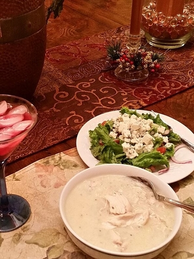

Greek Avgolemono Chicken Soup

Description
This is the traditional recipe made in Greek kitchens. The basic Avgolemono (broth and lemon) can be varied for other similar Greek recipes. Serve with bread. Bread bits can be dipped into the soup. The soup will last in the fridge for a number of days or can be frozen. To reheat, place in microwave or heat on the stove.
Ingredients
- 1 (3 pound) whole chicken
- ½ cup uncooked white rice
- salt and freshly ground black pepper to taste
- 3 eggs, beaten
- 2 lemons, juiced
Steps
- Rinse the chicken and remove any organs that may be inside. Place in a pot large enough for the chicken to move around, but not too much room or the broth will be watery. Add the chicken neck if that is included with your chicken. Fill with enough water to cover by about 1 inch. Cover and bring to a boil. When boiling, reduce heat to low and simmer for 45 minutes to 1 hour, skimming the fat from the top as it collects.
- When the chicken is done, the meat should pull from the bones easily. Transfer the bird to a large bowl and set aside to cool. Add the rice, and season the broth with salt and pepper. Simmer over low heat for 20 more minutes, or until rice is tender.
- Whisk the eggs with the lemon juice in a bowl. When the rice is done, turn off the heat. Whisk one ladle full of hot broth into the eggs slowly so the eggs do not curdle. Gradually whisk in more broth until the egg mixture is heated. Then pour the egg mixture back into the pot, whisking briskly. The result should be a creamy, cloudy looking soup. You may season with additional salt, pepper or lemon juice at this point.
- You may add pieces of chicken to the soup before serving or serve soup with salted chicken on the side.